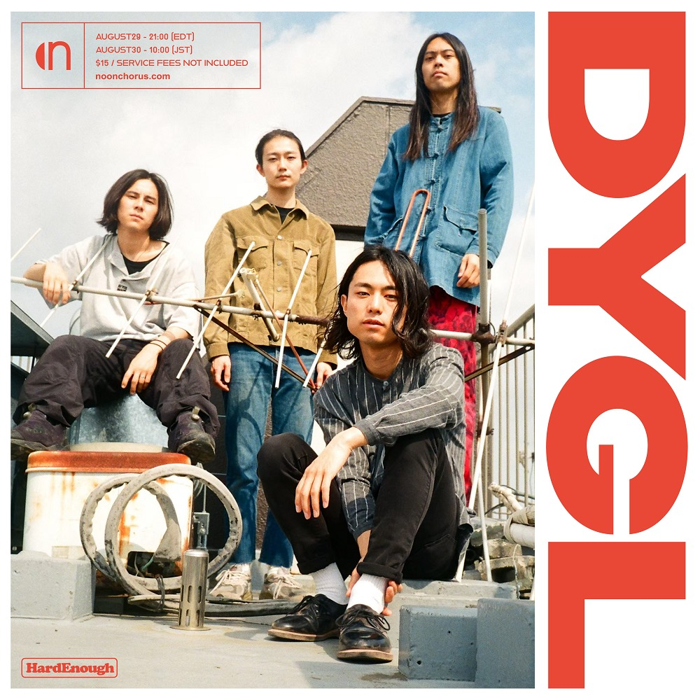

DYGL

DYGL is a band formed in Tokyo, Japan. DYGL (pronounced Day-glo) might
have begun via a hometown tradition, but it's in this
cross-continental, wide-reaching approach that they've truly found
their place. The band released their first EP recorded in the United
States. As Nobuki Akiyama (Vocalist) said that their first album would
be the first step for public recognition, they successfully released
the 1st album in April 2017, which was produced by Albert Hammond Jr.
With huge support from Albert,DYGL did an Asia tour, a Japan tour and
did some performances the United Kingdom and United States.